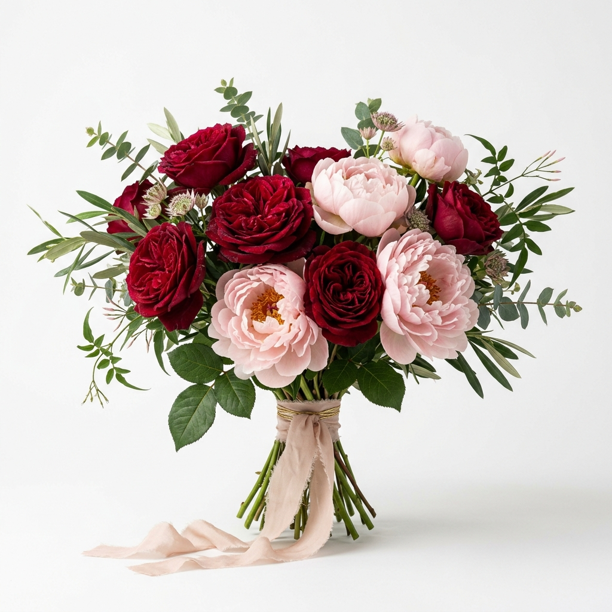

Edición Pasión • Corte Matutino
Rosas Inglesas & Terciopelo
Rosas de jardín seleccionadas en tono carmesí profundo y peonías ruborizadas. Envueltas en listón de seda deshilachado a mano.
$1,250 MXN
